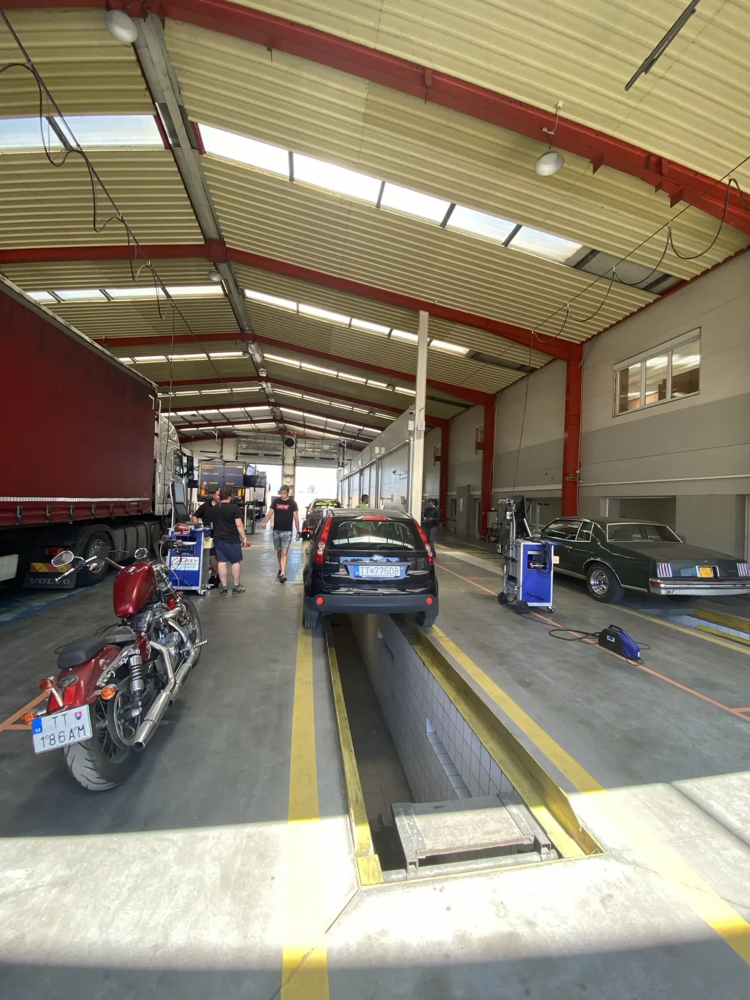
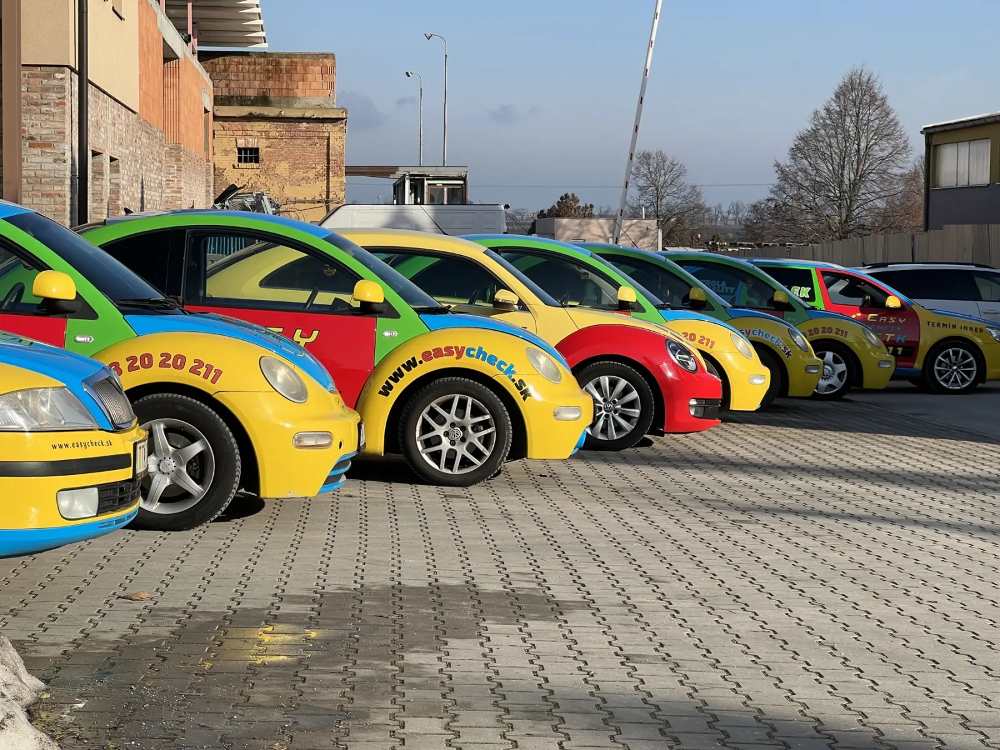
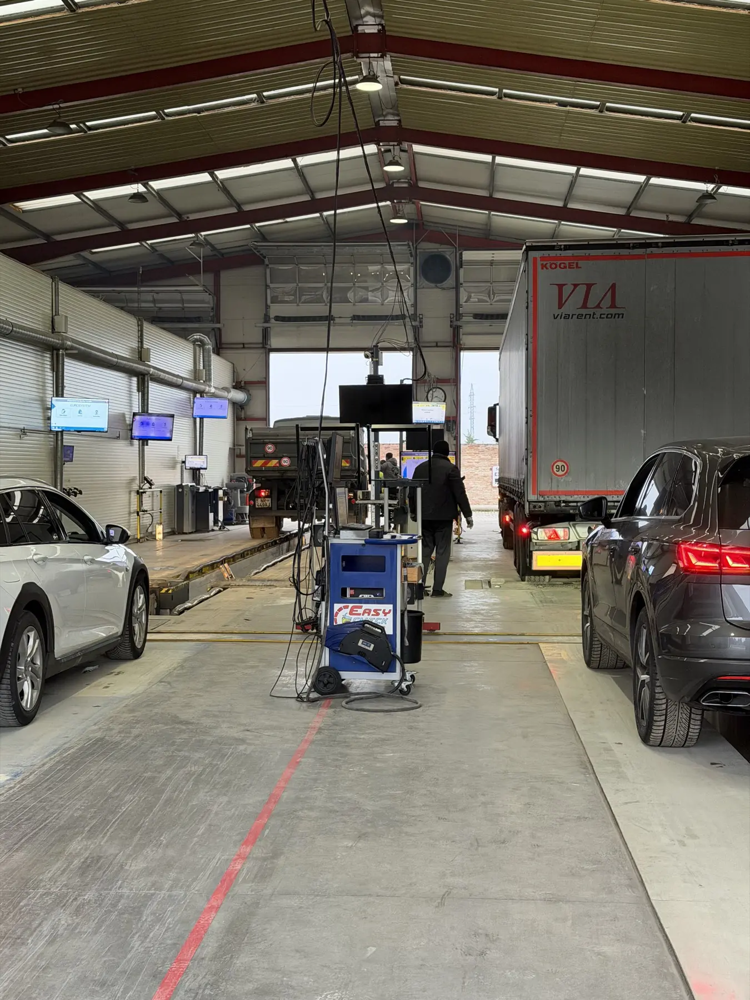
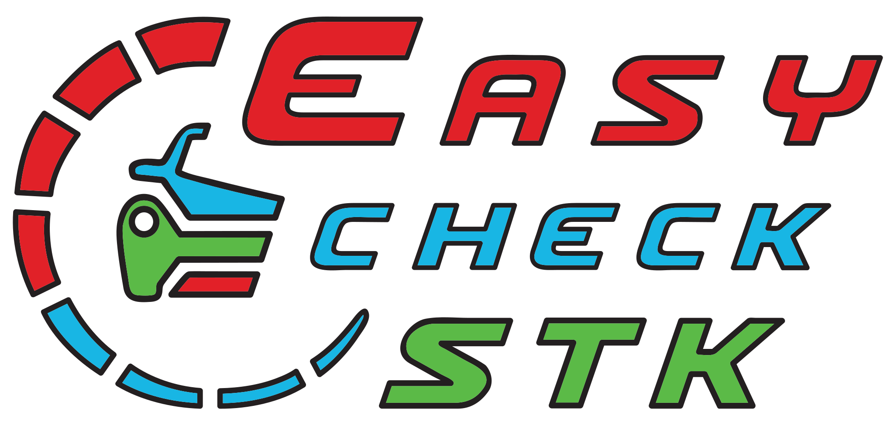
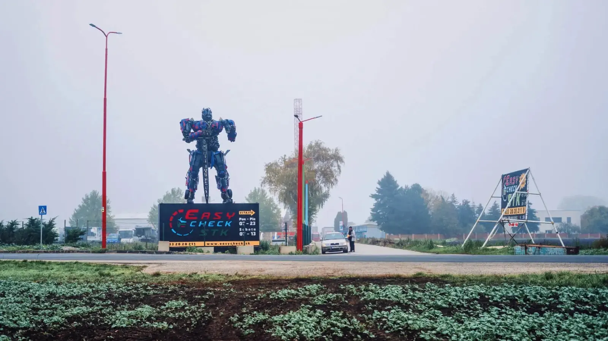
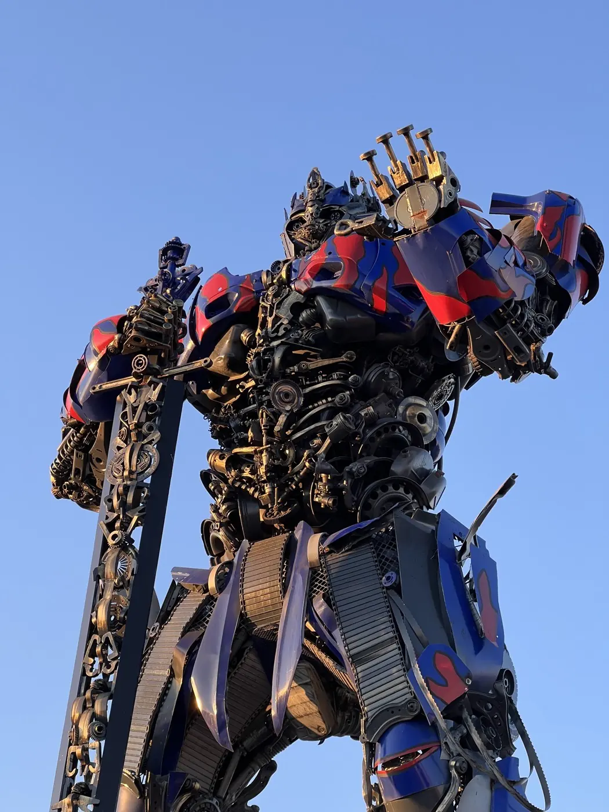
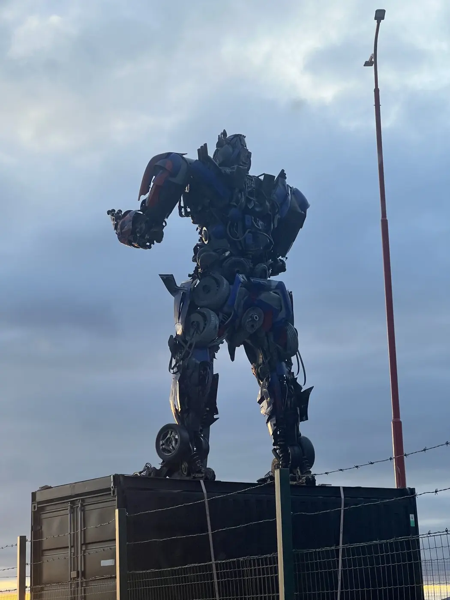
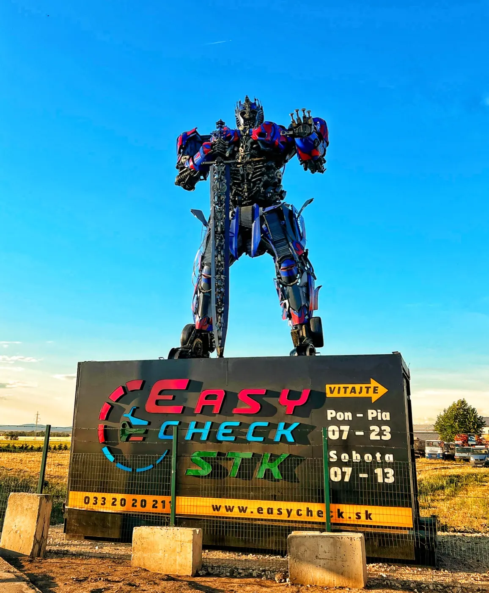

Všetko pod jednou strechou.
Online alebo telefonicky za pár sekúnd.
Každý zákazník točí kolesom šťastia.
Všetky kategórie a typy kontrol nájdete
v kompletnom cenníku.
Doklad vozidla — osvedčenie o evidencii (stačí „malý“ technický preukaz). Pri LPG/CNG aj protokol o montáži plynového zariadenia, po vážnej nehode certifikát o oprave. Pred príchodom si skontrolujte svetlá, pneumatiky (dezén aspoň 1,6 mm), čelné sklo a povinnú výbavu.
Rezervujte si približne 60 minút. Počas kontroly môžete počkať v čakárni pri káve.
Online objednávka trvá pol minúty a termín garantujeme do 24 hodín. Stačí sa objednať alebo zavolať na 033 20 20 211.
Závady opravíte a prídete na opakovanú kontrolu. Pri osobnom aute do 3,5 t stojí v deň kontroly 20 €, do 60 dní 35 €. Drobné chyby často odstránime priamo na linke.
Vozidlo vyzdvihneme na vašej adrese, skontrolujeme a vrátime. Zdarma do 15 km od stanice, platíte iba kontrolu. Platí pre kompletnú TK + EK osobných vozidiel, výzdvih od 07:00 do 16:00.



